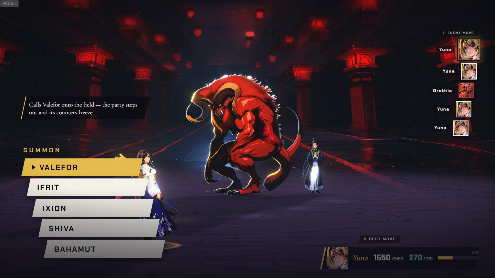

IFRITMirror of Grothia
Hellfire · gauge full
CMarks in the world — Link 1: Yuna picks an aeon. Ifrit is locked; Grothia opens with Hellfire
Real engine frame + real HUD (Chapter X battle, Yuna-only line-up, candidate art served in) · overlays are the mockup · aeon numbers are Chapter X’s shipped values
CONCEPT